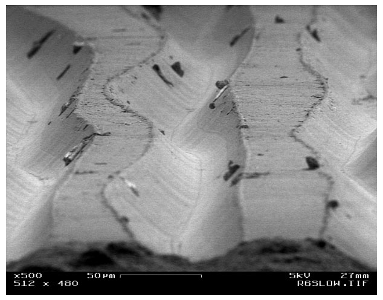
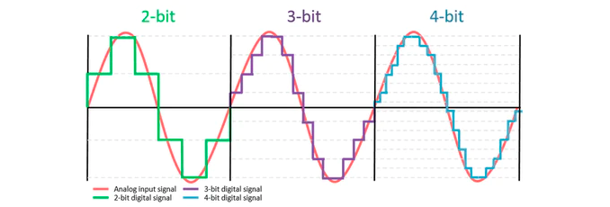
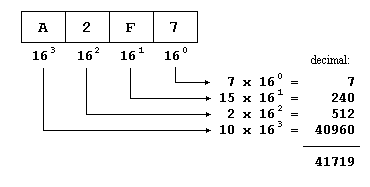
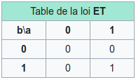
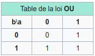
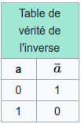
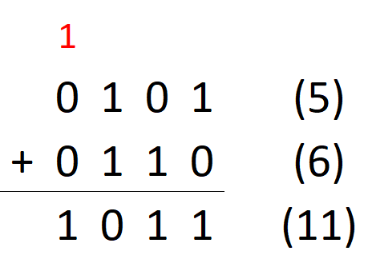
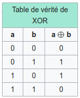
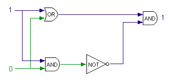

- Qu’est ce qu’un ordinateur ?
- Qu’est ce que le binaire ?
- Qu’est ce qu’une donnée ?
- Qu’est ce qu’un fichier ?
Qu’est ce que le numérique (VS analogique) ?
numérique VS analogique

- Notre monde est analogique. Les grandeurs physiques ont une infinité de valeurs possibles.
- En règle générale :
numérique = discret
analogique = continu
- Une information est dite “numérique” quand on utilise un nombre pour représenter une grandeur physique.
Questions
- Exemples de systèmes analogiques ? Numériques ?
- Combien de valeurs y a-t-il entre 1.1 et 1.2 ?
Résolution

Taux d’échantillonage

- Fréquence d’échantillonage en audio, 44100Hz, 48000Hz, etc …
Pourquoi le numérique ?
- À cause du bruit dans les circuits. Les données numériques sont plus faciles à stocker et à transmettre.

- Parce qu’un nombre est une abstraction que nous (humains) pouvons manipuler plus facilement
Qu’est ce que le binaire ?
Décimale

Hexadecimale

Binaire

Questions
- Pourquoi la prédominance du système en base 10 ?
- Pourquoi dit-on Quatre-vingts *?
À cause du système vicésimal (ou vigésimal), sur une base 20. Il était utilisé par les plus grandes civilisations de l’Amérique précolombienne, les Aztèques par exemple, ou les Mayas. Mais aussi en Europe. Sur le vieux continent, il a connu son apogée pendant le Moyen Âge, pour disparaître à la fin de cette période.
- Convertissons quelques nombres!
- Connaissez-vous un moyen de communication antérieur aux ordinateurs qui utilise un code binaire ?
Le code binaire
Pourquoi le binaire ?
- Simple à fabriquer
- Base d’un système de logique
vrai = 1
faux = 0
Beaucoup de systèmes dans notre environnement ont un état binaire. Par exemple, une lampe allumée ou éteinte.
Logique booléenne
Opérateur logique ET. Le résultat est vrai si les deux variables sont simultanément vraies.

Opérateur logique OU. Le résultat est vrai si l’une ou l’autre ou les deux variables sont vraies.


Le binaire et les ordinateurs
- Un CPU est un circuit qui éxecute des commandes très simples : chercher une valeur en mémoire, additionner deux nombres, etc …
Exemple : l’addition binaire

Table de vérité de l’addition binaire :

Opérateur logique OU EXCLUSIF. Le résultat est vrai si l’une ou l’autre des deux variables est vraie, mais pas les deux simultanément.

Circuit du OU EXCLUSIF en utilisant des opérateurs booléens élémentaires.

Unité arithmétique et logique du circuit intégré 74181

Les données
Le code binaire, matière brute

au niveau de la donnée brute (le bit), il n’y a pas de différence entre une image, du texte, de la vidéo, etc … juste des 0 et des 1.
sudo tcpdump -vvv | aplay -c2 -r 2000 -f FLOAT_LE
cat /var/log/kern.log | aplay -c2 -r 4000 -f MU_LAW
Pour faire sens, les bits doivent être structurés
- groupés en paquets
- ces paquets à leur tour structurés en fichiers
NB : apparemment on peut faire la même chose avec sox sur mac (lien).
Groupements de bits
1 octet = 8 bits en anglais, octet se dit byte. Ne pas confondre avec bit !!!- Multiples :
- kB est kilo bytes,
1 kB = 1000 octets = 8000 bits
- MB est mega bytes,
1 MB = 1000000 octets = 8000000 bits
Les octets
- les processeurs traitent des paquets de plusieurs bits en même temps (architectures 32 bits (4 octets), 64 bits (8 octets), etc …).
- les octets sont souvent représentés au format hexadécimal

Questions
- Quel nombre maximum (en décimal) peut-on mettre dans un octet ?
- Avez-vous déjà vu ce nombre (ou de l’hexadécimal) quelque part?
Le fichier
- Série d’octets organisés suivant un format défini
- Le fichier commence souvent par un en-tête
Encodages texte
- ASCII, UTF-8, UTF-16, etc …
- une valeur binaire stockée sur un ou plusieurs octets est mise en correspondance avec un caractère. Par exemple, pour ASCII :

Fichier Wav
Le paradoxe du singe savant (aka “Infinite monkey theorem”)
- pifs : https://github.com/philipl/pifs
Les fichiers audio
Codecs free VS licensed (jpg, mp3, etc …)
Le data-bending
- Formats audio WAV structure (header + PCM data), mp3. Lossy vs lessless (hands on experiment with data bending).
- Exemples / tutoriels databending / datamoshing : Databending tutorial series : https://www.youtube.com/playlist?list=PL7w4cOVVxL6HfT-FoqQ1ukW2G__l0fTr6 Datamoshing, tutoriels en français (un peu vieux) : https://ressources.labomedia.org/le_datamoshing
- Datamosh https://www.youtube.com/user/burntfritter/videos https://www.youtube.com/watch?v=gcppKXM12eY https://www.youtube.com/watch?v=ybdHLxsIFsE https://www.youtube.com/watch?v=gYMBUIR7C9o
Visualisation / sonification de données
Data ?
Symbole ?
data sets, concevez une sonification. Est-ce qu’il y a une perte d’information ?
https://hal.archives-ouvertes.fr/ads-00104781/document
https://journals.openedition.org/bibnum/1190
https://centenaire-shannon.cnrs.fr/chapter/la-theorie-de-information
https://www.francetvinfo.fr/replay-radio/les-pourquoi/pourquoi-dit-on-quatre-vingts-et-non-pas-octante-un-heritage-celtique_1786389.html
http://www.digitalethereal.com/